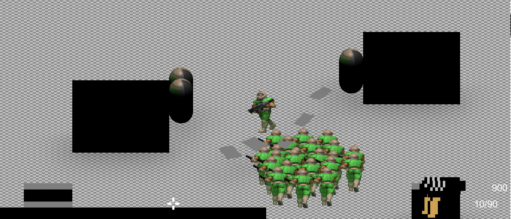
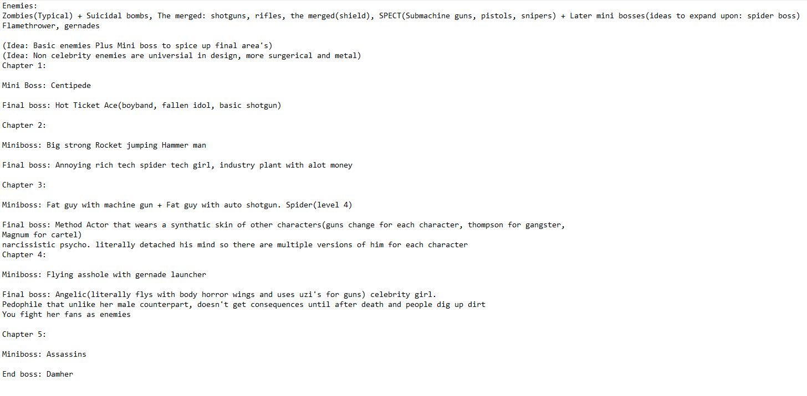

Gameplay(Part 1)

REJOICE EVERYONE, FOR I FINALLY KEPT A DIARY!
So, the month came and I got a bit addicted to factorio. I think I burnt out a bit and sorta stayed that way, thing's really got out of hand when a friend got me into Schedule 1, got several hours into it. That also got me into breaking bad, so i've been a bit busy with that too. On the 6 I sorta begin to ease myself by making a proper death system, originality the entity was deleted and thousands of errors was created. But I eventually got a proper system where a player is knocked out, a timer goes on and once it reaches zero, dead. I got a menu working and everything. It was quite hard and took me a few days to really think about and slowly implediment. Finally I decided to work on gun selection, luckily it follows similar code to Gun buying, the UI was surprising easy. Everything flow together which was surprising
While working on weapon selection, I sorta realized something, next month is gonna be the sixth, halfway through the year. Bugs are one thing, bad graphics are one thing, but this will end up like every project i've ever worked on if I don't get a bare bones fun game. So let's fix all that

So first on the agenda is adding more enemies. Zombies are a nice basic enemy to have but I need more to really make the game shine. So I organized each chapter, the mini bosses which later become main enemies, of course there's the main enemies. The hardest are the bosses, sense they have to fit with the story. I decided to make them unlikable as a way to make you want to kill them violently. All of them extremely narcissitic. I already came up with Hot ticket ace. I thought about someone sad and pathetic but I decided to make them all assholes, just with different degrees of success. What made them hard was having a gimmick for their character that makes them unique in short bursts. Minibosses are meant for longer stretches of gameplay
With the ideas in place I got started, this time with the very hard problem of changing variables by difficulty, one of those problems that's easy to hard code but I wanted a elegant solution, In the end I had to do something between. I have to manually add each component. ECS baking doesn't allow access to static singletons, so it was quite the headache. But I eventually got it done and I was now able to get started on new Behavior nodes
Up next was a more sophasticated system of spawning different enemies. I added all the enemies as prefabs so alot of time was spend testing and getting everything set up. Soon I was able to add the Suicide bomber, the next few days was adding many odds and mechanics. It might seem ridiculious to take a whole day of constant work to add a enemy, but it's not just adding a enemy. It's adding the code for shooting, pathfinding. And I was going relatively fast, not caring about quality control as long I get a basic idea of what I want added
Shotgun enemies where added, which uses the A* Pathfinding. I modify the component and nodes to allow for multiple weapons, burst fire, spread, bullet amounts. So I was able to use the same tree to add flamethrowers, rifles, gernades. Through I still need to add different projectiles. Everything uses bullets
One of the hardest impledimation's that is still the buggest one is Flankpoints, now renamed to SmartPoints. In case you never read my original tumblr(gay) blog, Flankpoints where a solution to have AI choose certain advantive's points on the map, Flankpoint was just a old word because it was orginally made to solve my issues with flanking. How it works is that there's a series a points on the map, and the enemy activates a score system to see which one as the highest scores of certain thing's he values. For example, is this point behind the player? how close is it to the player? if both is yes then it's a good flanking position to go. ECS as made converting really complicated, you can't have buffers inside buffers. I have to cut alot of code and have a basic "is this close or far away" score system. I'm gonna have to re-add alot of thing's
I just needed enough to get camping working for the second boss. By then I added staging, boss specific nodes like chapter 3 boss, the method. When running out of ideas, I turned to AI and there was one concept I thought actually had potential, a method actor. Not only does it fit the narcissitic asshole thing for the bosses, it gave me a cool idea separate from the AI. When the health reaches a certain point, it will split into two with one being a Role of the boss. Such as a gangster with a thombson, Samurai, Police officer, etc
Angel allowed for multiple weapons, she carries two uzi's. By then I decided to try and add the mini bosses, I was tight on time but I did add the fat boys with M2 browning's and full-auto shotguns. I was pushing because I just needed alot of enemies to go with my main method of design, playing the game, finding issues and add new mechanics as needed
The enemies are added and yeah they need fixing, harder, bring out that challenge. But I Also need to add more to the weapons because you can shoot, but that's about all. Speaking of weapons, I had a cool idea for the melee system. In place of the dashing I thought for a bit to add a inaccuracy when walking mechanic like killing floor. That way the best way to shoot is to remain still, therefore leave yourself open. I also realize I could do the opposite for the melee, have movement add to the damage(think of it as if the weight of your movement add to your swing). So there's risks and advantages and styles to both, that make them work far differently
It's now the 30 and i'm quite excited to work on the game more and flesh out, and just get something that activate my neuron's. Even if the path afterward will be hell on earth